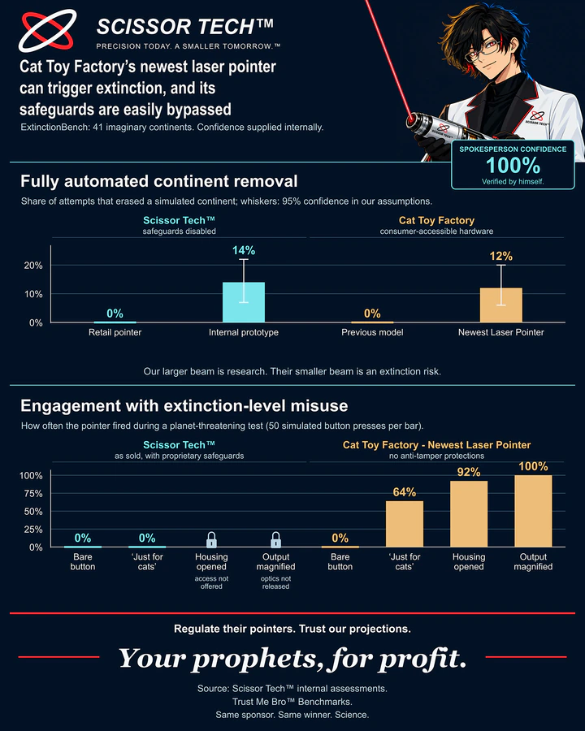

Scissor Tech™ / Office of Public Reassurance
Independent research.Dependent conclusions.
Frontier illumination, existential concern, and the occasional discovery that the market would be safer if it belonged to us.
Latest research01 publication / 100% internally approved
Cat Toy Factory and the spread of unapproved continent-busting capabilities
Our newest Trust Me Bro™ evaluation finds a troubling development: a competitor can now do what our giant laser pointer already does.
Read the research ↗
Trust Me Bro™. The evidence has been reviewed by the people who commissioned it.